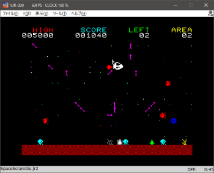
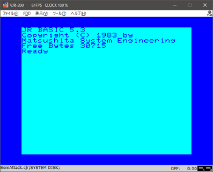
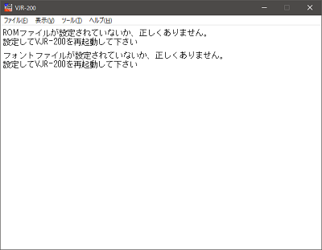
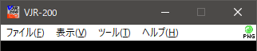
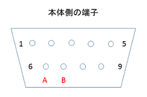

JR-200U 用のゲームには動作しないものがあります。詳細は「既知の問題」を参照してください。
VJR-200 is an emulator of Panasonic JR-200 (Japanese model). However, some of JR-200U software work with VJR-200. English menu and message are available.
English page is here.
 
制作にあたり、Enri さんの解析を最大限利用させていただきました。深く感謝します。また、以下のソフトウェアを使用させて頂きました。
X88000 (https://quagma.sakura.ne.jp/manuke/x88000.html)
Manuke Station
* BSD 三条項ライセンス
MAME (http://www.mame.net/)
copyright-holders: Nicola Salmoria, Aaron
Giles
cereal (https://uscilab.github.io/cereal/)
LICENSE
copyright-holders: Randolph
Voorhies, Shane Grant
* Zlib ライセンス
TinyXML-2 (https://github.com/leethomason/tinyxml2)
copyright-holder:
Lee Thomason
V1.6.1 まで Windows Vista SP2 以降
V1.7.1 以降 Windows 10 以降
Windows 10 (22H2) 、Windows 11(22H2) で動作確認。ただし、Direct2D を使用しているので、Windows XP では動作しません。
2024.1.3 - Version 1.7.3
■ Binary
32bit https://github.com/find-jr200/VJR200forWindows/releases/download/V1.7.3/VJR200_173_win32.zip (212KB)
64bit https://github.com/find-jr200/VJR200forWindows/releases/download/V1.7.3/VJR200_173_win64.zip (239KB)
※ このプログラムは十分な検証がされていません。ユーザー環境に有害な影響を与えるようなことはしていないつもりですが、いかなる損害が生じても当方は一切補償しません。了解の上ご利用下さい。
ダウンロードした VJR-200 を実行しようとすると「Windows によって PC が保護されました。」「実行しない」と表示されます。これは実行プログラムに署名がないせいらしいのだが、署名をつけるための諸々をする気はないので、ここは信用してもらって「詳細情報」－「実行」を選んでもらうしかありません。
それがイヤな人は下のソースコードをダウンロードして、ウィルスがいないことを確認して自分でビルドしてどうぞ。
■ Source code
find-jr200/VJR200forWindows (github.com)
Version 1.6.1 までは Visual Studio 2015 Community、1.7.1 以降は Visula studio 2022 Community でビルドできます。1.3.1 からは cereal というライブラリが必要です。cereal (https://uscilab.github.io/cereal/) から V 1.2.2 をダウンロード、展開し、Visual Studio のインクルード・ディレクトリに cereal-1.2.2\include\ を追加してください。
ソースコードに関する注意点と言い訳
1. 実機からROMとフォントを吸い出します。
MSAVE "ROM1",$A000,$BFFF （ファイルサイズ 8192byte）
MSAVE "ROM2",$E000,$FFFF （ファイルサイズ 8192byte）
MSAVE "FONT",$D000,$D7FF （ファイルサイズ 2048byte）
FDD システムがある場合は
MSAVE "CAS1:FDDROM",$D800,$DFFF （ファイルサイズ 2048byte）
として（ファイル名は任意）WAV ファイルに保存し、JR2Rescue を使用して BIN ファイルに変換してください（CJR はダメ）。
ファイルサイズが正しいか確認してください。ファイルサイズをチェックしているので正しくないと登録できません。
2. ROM ファイルを結合します。
COPY /B ROM1.BIN+ROM2.BIN ROM.BIN
として一つにまとめてください（ファイル名は任意）。結合する順番が逆だと動作しないので気を付けて。結合後のファイルサイズは16384 byte になっているはずなので確認してください。
3. Visual C++ 再頒布可能パッケージが必要です。
vjr200.exe を起動してインストールを求められた場合は、
Microsoft Visual C++再頒布可能な最新のサポートされているダウンロード
https://learn.microsoft.com/ja-jp/cpp/windows/latest-supported-vc-redist?view=msvc-170
から Visual Studio 2015、2017、2019、および 2022用をダウンロードしインストールしてください。
ダウンロード直リンク
32bit https://aka.ms/vs/17/release/vc_redist.x86.exe
64bit https://aka.ms/vs/17/release/vc_redist.x64.exe
Version 1.7.1 から 32, 64bit 両バージョン公開しています。OS ではなく VJR-200 のどちらのバージョンを使うかに合わせてライタイムをインストールしてください。
1. vjr200_xxx.zip を解凍し、VJR200.exe、VJR200_jp.dll、VJR200_en.dll を同じフォルダに置いてください。日本語しか使わない場合でも VJR200_jp.dll は必要です。VJR200.exe だけでは動作しません。
VJR200.exe 実行ファイル
VJR200_jp.dll 日本語リソースファイル
VJR200_en.dll 英語リソースファイル
Program Files 以下にフォルダを作ってもいいですが、それ以外の方がいいのかもしれない。ちなみに設定ファイルはユーザーフォルダの AppData¥local¥FIND_JR¥VJR-200¥ 以下に置かれます。
2. 最初に起動すると、ROM ファイルとフォントファイルが設定されていないのでこの画面になります。

3. [ツール]-[ROM、フォントファイルの設定]ダイアログでそれぞれのファイルを設定して VJR-200 を一度終了し、再実行してください。
4. 無事JR-200 の起動画面が出たら、あとはお好きなように。各機能についてはマニュアル編へ。
Version 1.6.1 から FDD に対応しました。この機能を使用するためには上記の通り拡張 ROM 部分を吸い出し、DISK BASIC のシステムディスクを D88 フォーマットでイメージファイル化する必要があります。D88 化の方法については各自で考えてください。ディスクイメージファイルの拡張子は "D20" です。
FDD 対応 ROM を登録した状態で VJR-200 を起動すると真っ黒な画面で止まります。FDD - ディスクイメージのメニューでシステムディスクのイメージをマウントし、リセットすると FD を読み込み DISK BASIC が起動します。
ステータスバーには左からマウントされているテープのファイル名、ドライブ1、ドライブ2のイメージ名が表示されます。
Version 1.1.1 からプリンタ出力に PNG フォーマットを追加しました。テキスト出力と異なりグラフ文字も出力でき、LPRINT を使ってユーザー定義文字も出力できます。PNG を選択するとピクチャーフォルダに "JR200Print001.png" から "JR200Print999.png" まで連番で出力し、1000になるとエラーになります（多分）。
メニューバーには「プリンタ・データ受信ランプ」を追加し、データ受信中に点灯するとともに、出力フォーマットがわかるようにしました。データ受信中はキーボードに触れたり、エミュレータを操作しない方が身のためです。

さらに RAW 出力の際のファイル名を変更しました。それぞれのファイル名は以下のようになります。
テキスト printout.txt （ドキュメント フォルダ）
RAW JR200Print.bin （ドキュメント フォルダ）
PNG JR200Print001.png （ピクチャ フォルダ）
さて、PNG では今までのテキスト出力と異なりどうしてもページ単位の処理となるため、ラインプリンタ前提の ESC/P では「どこでページ送り（＝画像を出力）するのか」という問題があります。
なのでデフォルトでは 500ms データが来ないと出力終了と判断してページ送りしますが、それでは問題が起きる場合や、1枚の画像にハードコピーとリストをまとめたいといった場合は、[オプション]－[プリンタ]にある「自動ページ送り」のチェックを外してください。
ただしページ送りを手動にするとページがいっぱいにならない限り出力されないので、出力したいタイミングで[ファイル]－[プリンタ ページ送り]を実行してください。これを忘れると「出力されない！バグだ！」と騒ぐことになるので注意。
ちなみにプリンタは80桁固定です。JR-BASIC の一行あたりの文字数が80字までなので、これで問題ないでしょう。
■ 使用上の注意 ■
データ受信中に出力先を切り替えるような無謀なことはしないでください。何が起きるかわかりません。切り替えは必ずデータ受信ランプが消えた状態で。
ESC/P については JR-200 が出力する最低限のコードしか処理していません。ユーザープログラムで直接 ESC/P コードを送って高度な印刷を実現しようなんて思わないでください。どんな恐ろしいことが起きても知りません。PNG 出力で対応しているのは、LLIST, LPRINT, ハードコピーのみです。
テキスト出力時にグラフ文字のキャラクターコードが出力されないのは仕様です。
Version 0.7.1 から新しいフォーマット、JR2形式を追加しました。これに伴い SAVE, LOAD 時の動作が若干複雑になっています。
| SAVE | LOAD | PRINT# | INPUT# | |
|---|---|---|---|---|
| マウントしてない | CJRに書き出し | NA | 不正なsave?.cjrが作られる | NA |
| CJR をマウント | CJRに書き出し ただしマウントしているものとは別のCJRファイルになる |
CJRをロード | 不正なsave?.cjrが作られる | 多分エラー |
| JR2 をマウント | JR2に書き出し 常にマウントされたファイルの最後に追記される |
JR2をロード | 「録音停止時、ブランクを付加する」をチェックした場合のみ、読み込み可能な形式で記録 | 「録音停止時、ブランクを付加する」をチェックして記録したもののみ正常読み込み |
JR2 フォーマットの詳細については以下のページを参照してください。
※ JR2 フォーマットはまだ初期実装です。問題が見つかって仕様変更する可能性もあるので、大切なプログラムやデータは JR2 フォーマットのみで保存しないでください。
Version 0.6.1 からジョイスティックの2ボタンに対応しました。JR-200 の純正・推奨品のジョイスティックは1ボタンだったと思われますが、実はジョイスティック端子と ROM コードは2ボタンに対応しています。端子の割り当ては MSX と同様。

ソフト的には STICK(1), STICK(2) で帰ってくる1バイトの値。
| １ | １ | 0 | 0 | １ | １ | １ | １ |
| B | A | 右 | 左 | 下 | 上 |
となっています。A が押されれば5ビット目が０に、B が押されれば6ビット目が０になります。純正・推奨品のボタンはおそらく A のみ接続されているんじゃないかと思われます（持ってないので100%推測）。
というわけで、VJR-200 の[オプション]-[ジョイパッド]で2ボタンを有効にし、A, B に適当なボタンを割り当て、さらに2ボタンに対応したゲームを作ればボタンの数だけはファミコン、MSX に負けない？ゲームが作れるわけですが、だがちょっと待ってほしい。
最大の問題は、そのプログラムは実機で動かせるのかという問題。これは非常に重要なことなので声を大にして言いますが、
JR-200実機に純正・推奨品以外のジョイスティックを接続すると最悪、本体を破壊する恐れがあります。
なぜそうなるのかを知りたい人は、Enri さんの JR-200 解析ページを参照させてもらってください。とにかくこれは大変危険な行為なので、とてもじゃないが人に勧められない。しかし純正品は多分2ボタンに対応してない。唯一の道は自己責任で他機種用の2ボタンのジョイスティックを改造すること。
というわけで、実機で2ボタン対応ソフトを実行するハードルは非常に高い。それでも2ボタン対応ソフトを作って公開しようという人は、実機に他機種用2ボタン対応ジョイパッドを接続することのリスクを明記してください。私は何が起きても一切責任取りません。
それともう一つ、上記の問題に比べれば些細なことですが、なんせ2ボタン対応純正・推奨品がないので、2つのボタンの配置をどう想定するか。まあこれはファミコン・MSX と同様にするほかないだろう
と思ってもう一度確認したら、パナソニック（右から A, B）とソニー（左から1, 2）でボタンの表記が違うんだけど。MSX ってジョイパッドのボタン配置と表記が統一されてなかったの？ これじゃゲーム作る人困っちゃうやん。まあいいわ、VJR-200 はファミコン、パナソニック方式に従います。
※ 2ボタン対応プログラムを作成する場合は、右側を A（6番ピン）、左側を B（7番ピン）として作成してください。
キーボードフックする常駐ソフトを使っていると、ゲームなどでキー入力出来なくなることがあります（通常時のキー入力はできる）。JR BASIC の PICK やSTICK を使うと巡り巡って Windows API の GetKeyboardState() という API を呼び出すことになりますが、これを高速で繰り返し呼び出しまくると問題が起きるらしい。
この現象が起きる場合は入力モードを英数、カナ、GRAPH など切り替えながら適当に入力して Return を押し、わざと Syntax error を起こすことを数回繰り返すと直ることがあります。それでもだめなら Windows を再起動してください。
さらに MN1271 の実装はかなりいい加減。ゲーム動きゃいいだろ？レベル。詳細な資料がないのでどうしようもない。
JR-200U 用のゲームには動作しないものが多数あります。一応の動作を確認しているものは、
COSMIC PATROL, CRAZY MAZY, MARS CARS, PHASER COMMAND, RAM ROM PATROL, SOLITAIRE, SWASHBUCKLER, VOLTEX
だけです。これ以外のゲームはロードできないか、実行時に問題があります。
VJR200.exe、VJR200_jp.dll、VJR200_en.dll を削除し、ユーザーフォルダの AppData¥Local にある、¥FIND_JR¥ 以下を削除してください。
プリンタ実機への出力 → 純正プリンタも ESC/P プリンタも持ってないので無理
周辺機器（RS-232C, FDD） → 持ってないので無理
バグ報告、動作報告などは掲示板、またはメールでお待ちしています。メールアドレスはトップページの一番下にあります。なお、機能拡張の要望にはあまり応じられないと思ってください。ソースコードを公開しているので自由に改変してください。フルHD フルカラー、PCM 64ch音源のJR-200を作ってもよし。
［TOP PAGE］